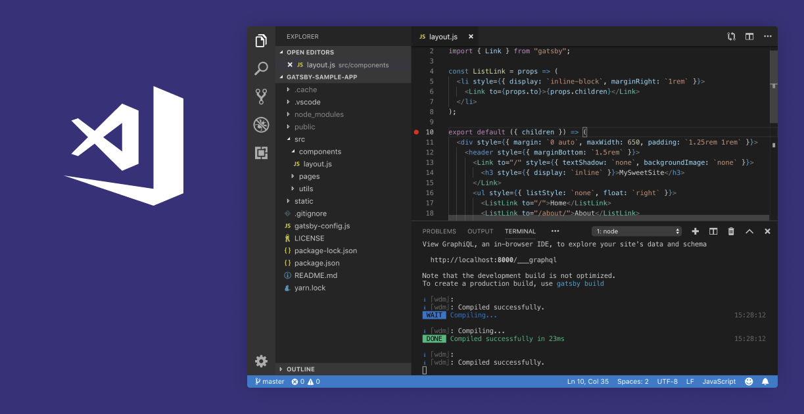

Web sitelerinin olmazsa olmazı olan JAVASCRİPT'i her projenizde kullanarak efektif siteler üretiyorum
Javascript, web programlama alanında yaygın olarak kullanılan dinamik bir programlama dilidir. Etkileşimli ve dinamik web sayfaları geliştirmeye yardımcı olan Javascript, isminden dolayı Java ileri karıştırılsa da aslında ikisi de birbirinden farklı teknolojilerdir.
HTML kaynak kodlarına Javascript ile müdahale edilebilir, form gönderme yapılabilir, ziyaretçiye mesaj verilebilir. Kısaca açıklamak gerekirse Javascript dili ile internet siteleri dinamik bir yapıya kavuşabilir. Web sayfalarında bulunan HTML’in durağan halini daha etkileşimli bir yapıya getirerek, kullanıcı için daha pratik yöntemler uygular.
Javascript dili “.js” uzantısı olarak kaydedilir. Javascript dilini HTML dosyası içinde kullanabiliriz. Javascript kodlarınızı web sitenize eklemek istiyorsanız tıpkı CSS çağırır gibi Javascript dosyanızı da çağırabilirsiniz.
Ancak size önerimiz Javascript kodlarınızı HTML dosyası içinde kullanmak yerine harici bir dosyadan çağırmanızdır. Çünkü arama motorları HTML dosyalarının hızlı olması ve gereksiz kodların bulunmamasını ister. Harici dosyadan çağırarak arama motorlarına sitenizi sevdirebilirsiniz.
StackOverFlow adresindeki verilere dayanarak yapılan bir analiz ile JavaScript geliştiricilerinin hangi araçları kullandığı, hangi teknolojilerden yararlandığı öğrenildi.
Günümüzde bazı zamanlarda düşüş yaşasa da, hâlâ dünyanın en popüler programlama dili olma ünvanını taşıyan JavaScript hakkında bir analiz yapıldı. 90 bin geliştirici StackOverFlow adresinde yapılan ankete katıldı ve JavaScript geliştiricilerinin cevapları alındı.
Geliştiriciler, JavaScript dilinin hem web üzerinde hem yerel platformlarda hem de back-end teknolojilerde çalışabilen full stack bir dil olduğunu söylüyorlar. Node.js’in sunucu bazında çalışmasıyla birlikte back-end geliştiricilerin sayısı da artış gösteriyor.
JavaScript dilinin çok sayıda framework’e sahip olması, bu programlama dilinin çok yönlülüğünü artırıyor. JavaScript ile mobil uygulama geliştirmek için React Native framework’üne ihtiyaç duyarken, masaüstü uygulama geliştirmek için Electron framework’üne ihtiyaç duyarız. Programlama dilinin çok yönlülüğü, bu dil üzerinde uzmanlaşmış geliştiricileri birçok alanda ön plana çıkarmaktadır.
JavaScript geliştiricilerine yapılan ankette en çok hangi framework’ü tercih ettikleri sorulmuş. Tahmin etmesi zor olmayan jQuery en çok tercih edilen framework olmuş. Listenin ikinci sırasında React.js yer alırken onu Angular.js üçüncü sırada takip etmiş.
StackOverFlow üzerinden yapılan ankette geliştiricilerin JavaScript programlama dilini kullanırken hangi IDE ve editörleri kullandıkları merak edilmiş. Listenin ilk sırasında Visual Studio Code açık ara farkla yer alıyor. İknici sırada Visual Code yer alırken onu Notepad++ yakından takip ediyor.
JavaScript geliştiricilerinin popüler veritabanlarına gelince MySQL bu alanda açık ara birinciliğini koruyor. PostgreSQL ikinci sırada yer alırken, Microsoft SQL Server ise üçüncü sıradan listeye girmiş durumda. Dördüncü sırayı SQLite doldururken, belge tabanı paylaşımlı veritabanı MongoDB ilk dörtte kendine yer bulamamış ve beşinci sırada bulunuyor.
Anketin en çok merak edilen sorularından bir tanesi de bu soru. JavaScript geliştiricilerine çalışırken hangi işletim sistemini kullandıkları sorulmuş. JavaScript geliştiricileri bu soruya Linux işletim sistemi olarak cevap vermişler. Linux bu listede ilk sıradan yer alırken, ikinci sırada onu takip eden Windows oluyor. Üçüncü ve dördüncü sırada ise sırasıyla Docker ve AWS yer alıyor.